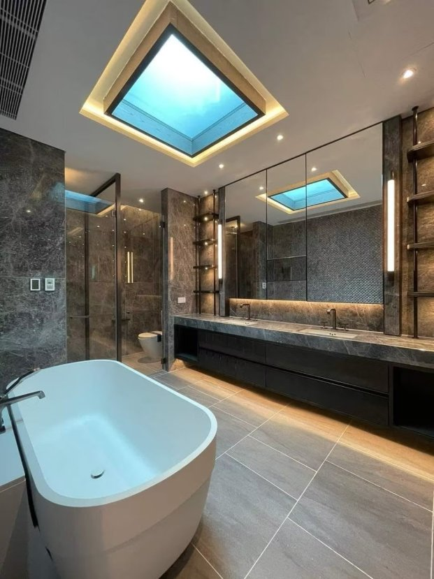

Twenty-two homes is a small number, and at Villa La Plage that is precisely the point. Developed by Poly Property Group, the project offers 22 exquisite homes that set out to redefine luxury living — and in each one, the master bathroom is equipped with an Oolaa Smart Mirror, installed in the master bathroom cabinet. It is a quiet statement about where luxury now lives: not only in stone, timber and views, but in how the morning feels.

Think about the minutes a bathroom mirror actually owns. The first look of the day happens there. So does the last check before dinner, the skincare routine, the shave, the makeup. Of every surface in a luxury home, the master bathroom mirror may be the one its owner truly interacts with daily — which makes it a strange place to leave technology out.
The master bathroom, upgraded
The Oolaa Smart Mirror turns that daily surface into a smart one. Residents can effortlessly connect to YouTube and Spotify, enjoying their favorite content while getting ready — a news briefing with the toothbrush, a playlist with the morning routine, a video while the bath runs. The mirror integrates seamlessly with Apple devices, giving every homeowner a personalized experience: their accounts, their content, their habits, on the glass in front of them.
The placement matters as much as the features. Set into the master bathroom cabinet, the mirror belongs to the furniture of the room rather than sitting on it. When it is off, the bathroom reads as a bathroom — elegant, calm, uncluttered by a television's black rectangle. When it is on, the same glass becomes the room's window to music, video and information. That dual nature is the whole idea of a mirror TV done properly.
It is also built for the room's realities. A master bathroom is a wet, steamy environment, and the Oolaa bathroom mirror is IP65-rated, with a built-in defogger and motion detection — clear after the hottest shower, awake when you walk in, dark when the room is empty.
Elegance with cutting-edge technology
Villa La Plage combines elegance with technology to create what the developer calls the perfect Sweet Home for those seeking a luxurious lifestyle. The smart mirror is the clearest expression of that formula. It asks nothing of the resident — no remote to find, no app to open at the sink — yet it changes the texture of the day's first half hour from routine to ritual.
For buyers at this level, that is the correct definition of a smart feature. It does not announce itself. It does not need a manual. It simply makes a room they already love work harder for them, every single morning, in the home they chose above all others. With only 22 homes, Villa La Plage was never going to compete on scale; it competes on exactly this kind of considered detail.
For developers shaping a small luxury project, the lesson generalizes: put the technology where the resident's routine already is, integrate it with the devices they already own, and let it disappear when it is not needed. Oolaa, with 31,000+ installations across Hong Kong and Macau and its own factory in Shenzhen, builds to that brief — factory-direct, and specified project by project. In a development of just 22 homes, every specification is a signature; the master bathroom mirror is one the residents will read every day.
Choosing a smart mirror for a luxury master bathroom
Buyers and designers speccing a comparable bathroom can borrow Villa La Plage's logic. Start with the routine, not the spec sheet: the mirror earns its place by serving the twenty minutes at the start of the day and the wind-down at the end of it. Content should come from services residents already use — here, YouTube and Spotify — and the mirror should meet the devices they already own, as this one does with Apple devices, so personalization is instant rather than a weekend project. Placement inside the cabinetry keeps the room's lines clean, and a proper wet-room rating with a defogger keeps the experience intact after every shower. Get those four things right, and the technology all but disappears — leaving only the ritual it improves.
Key facts
- Villa La Plage is developed by Poly Property Group and offers 22 luxury homes.
- Each master bathroom is equipped with an Oolaa Smart Mirror, installed in the master bathroom cabinet.
- Residents can connect to YouTube and Spotify while getting ready; the mirror integrates seamlessly with Apple devices for a personalized experience.
- The Oolaa bathroom mirror is IP65-rated, with a built-in defogger and motion detection.
- Oolaa (Viewdex Limited): Hong Kong company, own factory in Shenzhen, 31,000+ installations across Hong Kong and Macau.
Frequently asked questions
How many homes are there at Villa La Plage?
Twenty-two. The development by Poly Property Group is intentionally small, offering 22 exquisite homes.
What does the Oolaa Smart Mirror do at Villa La Plage?
Fitted in every master bathroom cabinet, it lets residents connect to YouTube and Spotify while getting ready, and integrates with Apple devices for a personalized experience.
Is the mirror suitable for a bathroom environment?
Yes. The Oolaa bathroom mirror is IP65-rated, with a built-in defogger and motion detection.
Who is behind Oolaa?
Oolaa is the brand of Viewdex Limited, a Hong Kong company with its own factory in Shenzhen, 31,000+ installations across Hong Kong and Macau, and the market leader in Hong Kong bathroom TV and kitchen TV.
Planning a residential, hotel, or commercial project in Hong Kong? Talk to the team behind 31,000+ installations.